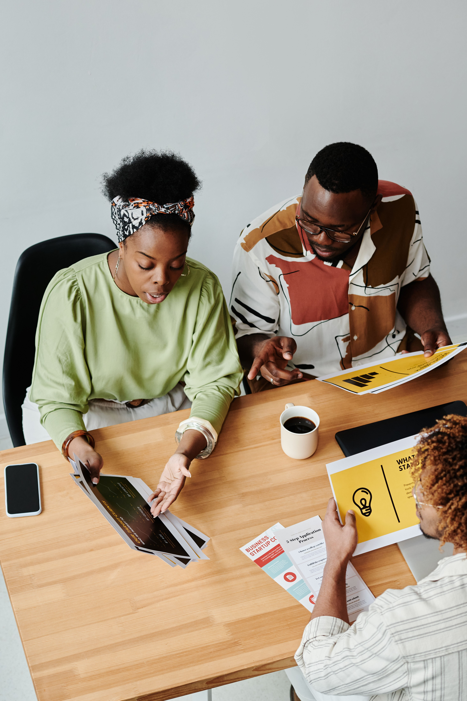

We are building a generation of young Africans who can generate evidence, produce knowledge and use research to shape better decisions across Africa.

Young Africans are often included in research as participants, but have fewer opportunities to lead research, generate evidence and influence how knowledge is used.
AYRN exists to change that.
Building practical research skills among young Africans.
Supporting young people to conduct and communicate meaningful research.
Connecting emerging researchers to projects, calls, collaborations and paid opportunities.
Creating connections between young researchers, organizations and the wider research ecosystem.
Explore research articles, reports, briefs and practical research insights from AYRN and our network.
Explore Research →Research calls, fellowships, training, consultancies and other opportunities relevant to young Africans.
View All Opportunities →Join the network and access skills, opportunities and collaborations.
Partner with AYRN on research, training and youth engagement.
Work with us to produce knowledge and strengthen research ecosystems.